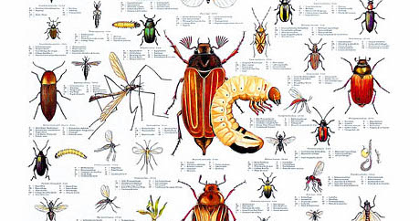
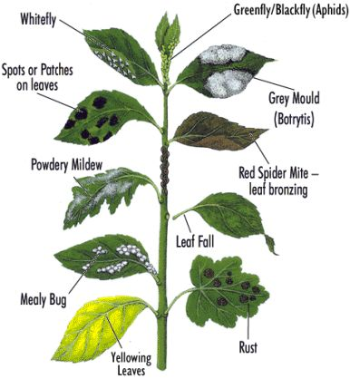
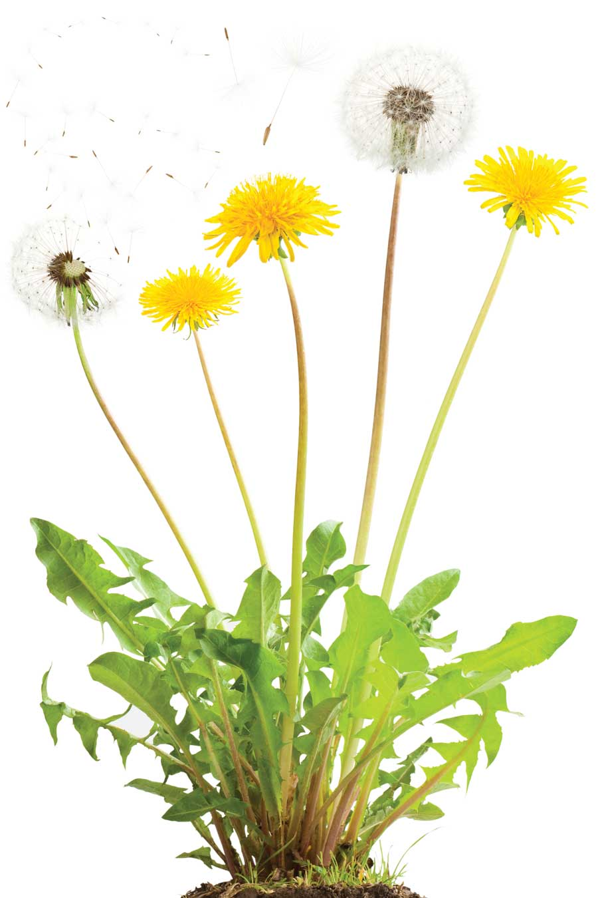
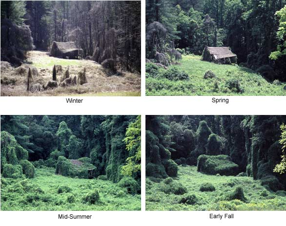
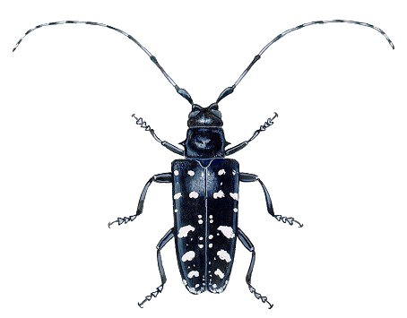
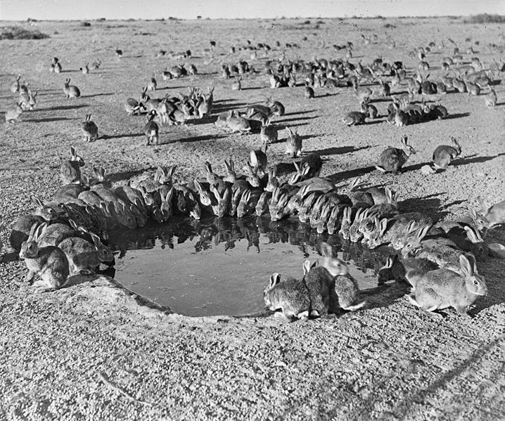
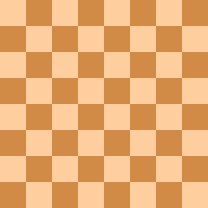
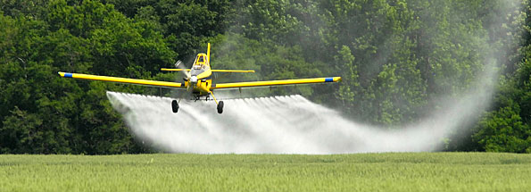

layout: false
class: center, middle, inverse
# Topic 6: Pests
---
name: base
layout: true
background-image: url(http://drpineda.ca/classroom/notes/slidebackground.png)
---
---
#Pests
A pest is any organism that is causing plants to produce less than they otherwise would. When organisms are part of a natural ecosystem, or are beneficial to people, then they are not pests. There are many different kinds of pests.

---
#Types of pests
In natural systems, organisms have parasites, predators, or competing plants that help to keep their numbers in check. Pests which cause the most problems are:
- Insects (are consumers, because they eat some or all of the plant)
- Fungi (cause infections which can destroy all or part of the plant)
- Weeds (Common Weeds) (are thieves, because they steal moisture, nutrients, light and space from the plant crop)

---
# Dandelions are successful weed pests because they have:
- Powerful roots (long taproot)
- Broad Leaves (shade other plants close by)
- Super seeds (easily carried by the wind)
… And they are very adaptable, because they grow well in any kind of soil and often survive because they are hardy and can easily be missed by the lawn mower (because of their short flower stalks).

---
# Introduced Species
Each food and fibre crop has its own unique set of pest weeds, insects and fungi. Sometimes exotic pests are introduced from other countries by accidental exposure to the crop (or sometimes intended). These types of pests can often become serious problems, because they may not have any natural predators, or environmental controls.
- Quack grass, thistles and chickweed are examples of some exotic weed pests.
- Dandelions were introduced to North America, from Europe, to be used as a salad vegetable. Naturals controls were not present and , as a result, dandelions thrived and over populated the country (coast to coast).
- The European bark-boring beetle was introduced fro the Netherlands in a shipment of logs. Unfortunately, it also brought with it a fungus, called Dutch Elm Disease, that has almost entirely wiped out the native elm trees of North America.
---
# Invasive species wrecking havoc
## Kuzu
- aka the "mile-a-minute vine" and "the vine that ate the South"
- Native to Japan
- Introduced to North America to conrol erosion
- Since its introduction in 1876, Kudzu has been spreading across the U.S. at a rate as fast as 150,000 acres annually, due primarily to the fact that its individual vines can grow upwards of a foot per day
---

---
# Asian Longhorned Beetle
- The larvae tunnels and feeds on the layer of trees found between their bark and their wood eventually killing the tree.
- To prevent new infestations, officials often must resort to cutting down and burning infested trees.
- Native to countries in Asia like Japan
- The economic toll of the Asian longhorned beetle is estimated to number in the tens to hundreds of billions of dollars.

---
[www.youtube.com/embed/nIN4lmfuQnk?rel=0](www.youtube.com/embed/nIN4lmfuQnk?rel=0)
---
# The European/Common Rabbit
- In 1859, a farmer by the name of Thomas Austin introduced 24 grey rabbits to his plot in Australia.
- Within ten years, however, the rabbits had bred with local rabbits on such a prolific scale that two million could be shot or trapped annually without having a noticeable impact on the population.
- By 1900, the rabbit population had exploded to a size reflective of an almost exponential population growth, had contributed to serious erosion of soils across the continent by overgrazing and burrowing, and are believed to be the most significant known factor for species loss in Australia's history.
---

---
# Think about it: Exponential growth
Exponentials can't go on forever, because they will gobble up everything. (Carl Sagan)
"When the creator of the game of chess showed his invention to the ruler of the country, the ruler was so pleased that he gave the inventor the right to name his prize for the invention. The man, who was very clever, asked the king this: that for the first square of the chess board, he would receive one grain of rice, two for the second one, four on the third one, and so forth, doubling the amount each time." ([Wikipedia, 2014](http://en.wikipedia.org/wiki/Wheat_and_chessboard_problem))
---
If a chessboard were to have rice grains placed upon each square such that one grain were placed on the first square, two on the second, four on the third, and so on (doubling the number of grains on each subsequent square), how many grains of rice would be on the chessboard at the finish?

---
# Controlling Pests
There are various ways that pests can be controlled:
- Natural enemies
- Large pests can be chased, or scared away
- Smaller pests can be picked off the crop by hand
- Machines (like cultivators and ploughs) can be used to uproot pesky weeds
- Different crops are grown each year (crop rotation)
- Regular summer fallow (controlled pests, but led to soil damage)
- Chemical controls (herbicides, insecticides and fungicides)

---
# Concerns with Chemical Controls
###Bioaccumulation
Pollutants move from level to level in the food chain. Bioaccumulation is a primary concern with the use of chemical pesticides, because as the chemicals move from level to level they accumulate in the organism. Organisms at the top of the food chain are the most adversely affected.
###Soil Residue
Some of the chemicals used as pesticides wash off the plants and leave residue in the soil and water. If the chemical is not easily decomposed they remain in the soil and can be poisonous.
---
# Concerns with Chemical Controls
###Harming Non-Target Organisms
Pesticides are often be toxic to organisms they were never intended to harm (like earthworms who can be exposed to pesticides from soil residue and ladybird beetles who eat aphids can be killed by the pesticide used to control the aphids)
###Resistant Species
As pesticide use increases, pests can (over time) develop a resistance to the toxic effects of the chemicals being used.
---
# Monoculture
In farm management, each field often support only one type of plant. This is called a monoculture. Monoculture lowers the biodiversity of the environment, because only one habitat is available.
This may be good for the farmer (harvesting & overall lower cost).
It can also give certain pests a huge supply of their favorite food. This results in an increased population and ultimately more pesticide used to control this increase.

There are alternatives to using pesticides.
---
# Organic Food Production
Organic food is food that has been grown without the use of chemical fertilizers and chemical pesticides. Manure and compost is used to add nutrients to the soil. Pests are controlled by crop rotation, tilling, mulching, companion planting and removal of insects by hand.
Organic Farming can be more expensive, but the quality is much better, the environment is less harmed and there is a higher level of safety for the farmer (without using chemicals).
Other techniques used to discourage the need for chemicals are:
- using good quality seeds
- removing weeds before their seeds mature
- cutting weeds along property lines
- cleaning equipment to reduce transfer
planting a variety of crops (instead of monocultures)
increasing diversity
---
# Sustainable Management of Plants for Food and Fibre
Producers, such as farmers and foresters must make very careful economically feasible decisions about what to produce and the practices they use to produce it.
Consumers must be more conscious of interdependence, and environmental impact factors, which must be taken into account, besides the cost, to ensure that the food and fibre industry is sustainable (so it will continue for a long time).
---
Sustainable ways of producing plants (like crop rotation) can also have some consequences other than just helping the environment:
- Breaks insect and disease cycle
- Improves soil structure
- Controls problem weeds
- Improves yield by as much as 15%
- Prevents the continued depletion of nutrients in the soil
- Makes economic sense
- Maintains a secure work environment for the grower and the workers